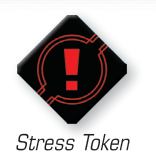

STRESS

Stress Token
A ship is stressed while it has at least one stress token. A stressed ship cannot execute red maneuvers or perform actions. The stress token is a red token.
-
A ship receives one stress token while it executes a red maneuver or after it performs a red action. Additionally, a ship removes one stress token while it executes a blue maneuver.
-
If a stressed ship attempts to execute a red maneuver, it instead executes a white [2 ] maneuver.
- After a stressed ship reveals a red maneuver, abilities that change the maneuver can be used. After resolving these abilities, if the ship would still execute a red maneuver, it instead executes a white [2 ] maneuver.
-
Huge ships have additional rules for stress (see Appendix: Huge Ships).